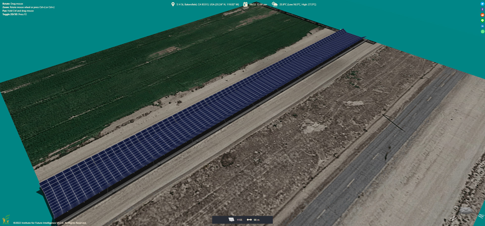
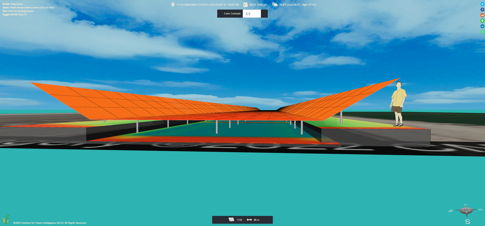
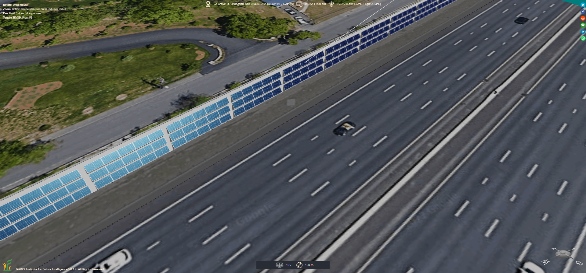
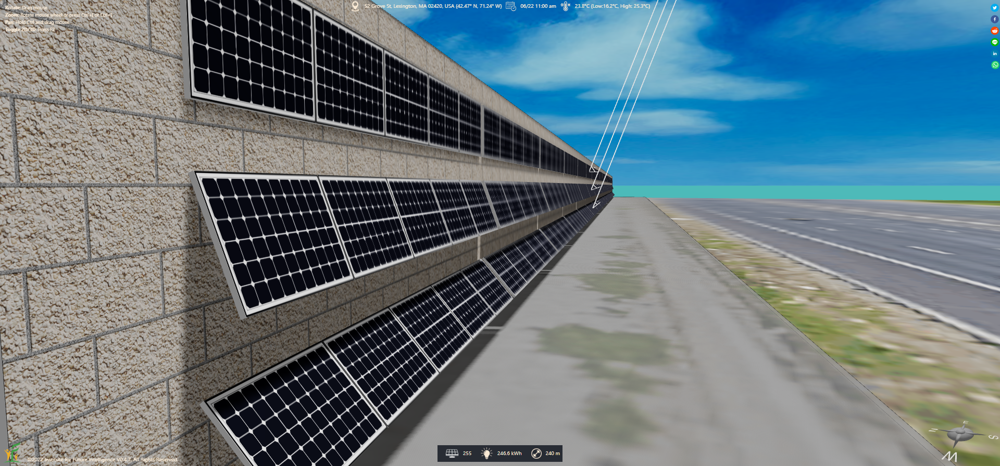
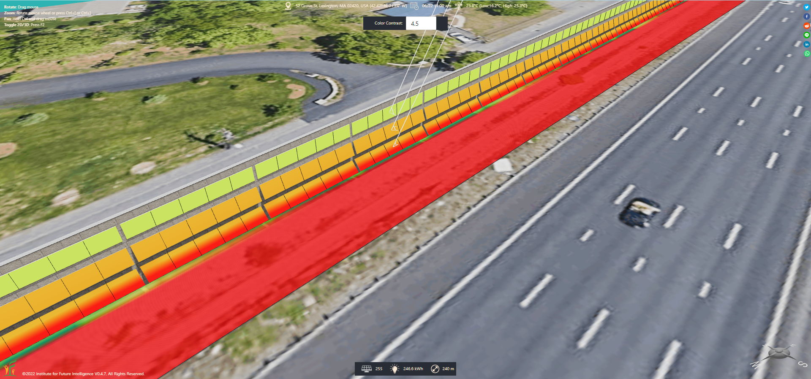

Integrating Photovoltaics into Infrastructure
By Charles Xie ✉
Listen to a podcast about this article
Photovoltaics can be embedded in infrastructure to generate electricity and achieve other benefits without using additional land or space. Our Aladdin CAD software, which incorporates Google Maps to provide an "engineering canvas" for drawing real-world projects, can be used by anyone to explore this type of integrated solar power applications. In this article, we will show you this capability through modeling a few projects that are about to break ground in the United States later this year (2022).
Solar canals in California
In the fall of 2022, California will start a $20M pilot project to install solar panel canopies over canals to generate green energy and conserve precious water at the same time. As a solar canopy can reduce the amount of solar radiation to the canal, the water temperature can be lowered, resulting in less loss of water to evaporation. Solar panels on top of a canal are also supposed to be more efficient due to the cooler microclimate above or near a water body. In addition to the cost of solar panels, the cost of the supporting steel structures that spans a canal is a main concern. But researchers claim that the extra cost can be offset by the water-saving benefits. The pilot project will test if the idea would pan out as expected in the real world. If so, California has 3,945 miles (6,350 kilometers) of canals that can be solarized, potentially providing clean electricity and water to millions of homes. This project is especially attractive considering the severe drought in California that may get worse in the future due to climate change.

A solar canal modeled in Aladdin

Solar radiation heatmap analysis shows less radiation is received by the water body under the solar canopy
For more information, check out this Reuters report on YouTube.
Solar noise barriers in Massachusetts
Also in 2022, the Massachusetts Department of Transportion (MassDOT) has reportedly agreed to pilot a photovoltaics noise barrier (PVNB) project along Interstate 95 in Lexington, Massachusetts to install solar panels on a section of an existing noise barrier. With a unique design that reduces the diffraction of the sound waves, the addition of solar panels may also improve the acoustic performance of the noise barrier while providing residents with clean electricity.

A solar noise barrier modeled in Aladdin
Solar panels at different heights on the barrier wall can also be tilted differently to optimize the use of space and the output of energy at the same time, as shown below.

Multiple rows of solar panels with different tilt angles

Heatmap analysis of the above design (June 22)
Click HERE to view and edit the above model
Conclusion
Solar energy is everywhere! But we will not be able to harness it without being able to envision a project.
Aladdin allows anyone to design renewable energy solutions for their own communities and examine how they may work using
accurate simulations.
As Aladdin works in the browser, users can easily share their projects with stakeholders via social networks.
With enough people becoming interested in a project, it may eventually turn into actions that change the world.